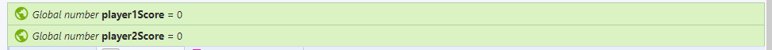
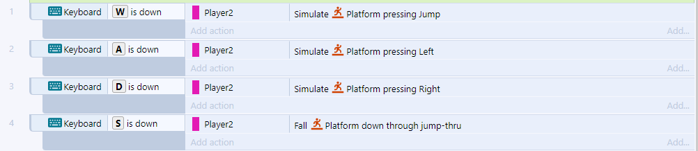
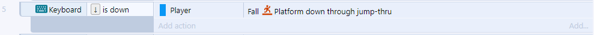
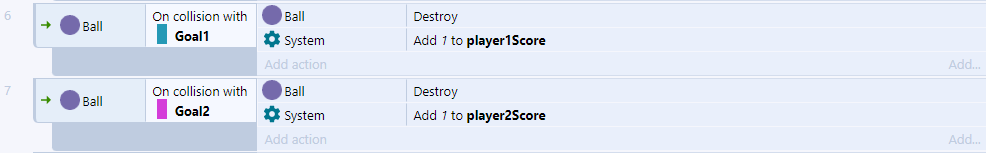
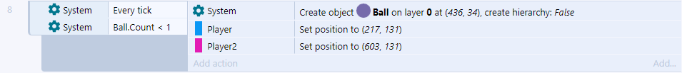
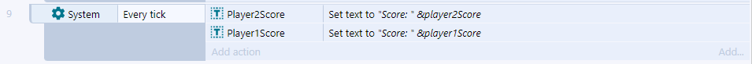

Construct 3 Introduction Game Event Sheet
General...

When the game first initiates, the Blue Player's score (player 1) and the Pink Player's score (player 2) are set to zero.
Player 2...

Unlike Player 1, which requires less code, Player 2 uses WASD keys to determine their movement. So when the key W is down, the player stimulates a jump. When the A key is down, the player moves to the left. When the D key is down, the player moves to the right. And when the S key is down, the player moves down.
Player 1...

The movements for the up arrow, left arrow and right arrow do not need to be coded. However, for the player to be able to move down from a jump faster, I incorporated a down movement when the down arrow is pressed.
Scoring...

When the ball collides with the Blue Goal, the ball is destroyed and the value 1 is added to the Blue Player's score. When the ball collides with the Pink Goal, the ball is destroyed and the value 1 is added to the Pink Player's score. This means that if the Pink Player accidentally pushes the ball into the Blue Goal, the Blue Player will still gain the point...so be careful!
Reset...

Every tick, the game is constantly checking when the ball count is less than 1. The ball count is only less than 1 when the ball had been destroyed after a player had scored. When this happens, the ball is created back to it's origional location and the players are set to new positions on the platforms. This is how the game resets after a point, but the scoreboard continues.
The Scoreboard...

The game is constantly assessing the players' scores. For both players the text says "Score:" and then the amount of times the ball has collided with their goal.
Home Page